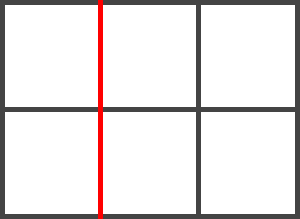
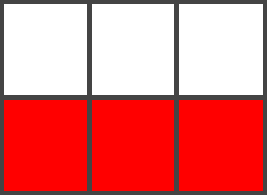
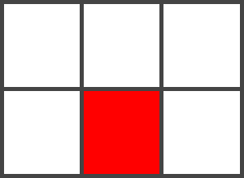
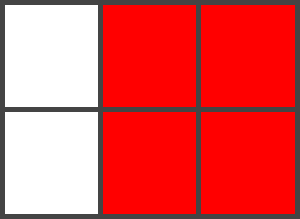

Grid Terminology
There are a few bits of terminology that are introduced by the Grid Layout specification. I've explained them here as they will make the examples easier to follow.
Grid Lines
The highlighted line in this image is column line2.
Grid Lines are the lines that make up the grid. These can be horizontal or vertical. We can refer to them by number, or by name.
Grid Tracks
The highlighted Grid Track in this image is between row lines 2 and 3.
A Grid Track is the space between two Grid Lines, either horizontal or vertical.
Grid Cell
The highlighted Grid Cell in this image is between row lines 2 and 3 and column lines 2 and 3.
A Grid Cell is the space between 4 Grid Lines. So it is the smallest unit on our grid that is available for us to place an item into. Conceptually it is just like a table cell.
Grid Area
The highlighted Grid Area in this image is between row lines 1 and 3 and column lines 2 and 4.
A Grid Area is any area on the Grid bound by four grid lines. It may contain a number of Grid Cells.